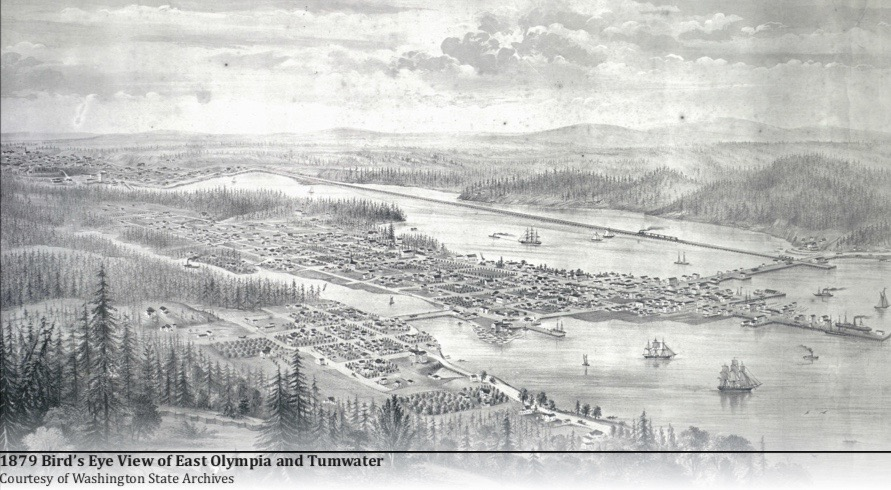

About

Olympia, Washington is most widely known as the Capital of Washington. It is also the most populas city within Thurston County and only 60 miles from Washingtons most populated city, Seattle. It also known as the cultural center of the southern Puget Sound region. Classified as an Urban city, the area stretches over 20 square miles total. The capital gets its name from the Olympic Mountains which is located in the Pacific Northest region of the U.S.
Before the first recorded history of Europeans coming to the Olympia, it was previously inhabited by the Lushootseed-speaking people also known as the Steh-Chass. There are also records of other Native American tribes frequently visiting including ancestral tribes such as the Squaxin, Nisqually, Puyallup, Chehalis, Suquamish, and Duwamish. It was first recored in 1792 when Peter Puget and his crew are said to have explored the area but no one recorded any encoutners with the indigineous peoples. It wasn't until 1846 when Edmund Sylvester and Levi Lathrop Smith together claimed the land of what is modern day Olympia.
With the support of the U.S. Congress, in 1851 they were able to establish the Customs District of Puget Sound for Washington Territory and Olympia was the home for the customs house. During the time of the Orgeon Trail, Olympia's population was steadily increasing. By 1854, Washingtons Governor Isaac I. Stevens had negotiated the Treaty of Medicine Creek with the representatives of the inhabiting Native American tribes requiring them to move to one of the three reservations sites while also including the preservation of indigenous fishing, hunting, gathering and other rights. In January of 1859, Olympia was offically incorporated as a town and then later as a city in 1882.